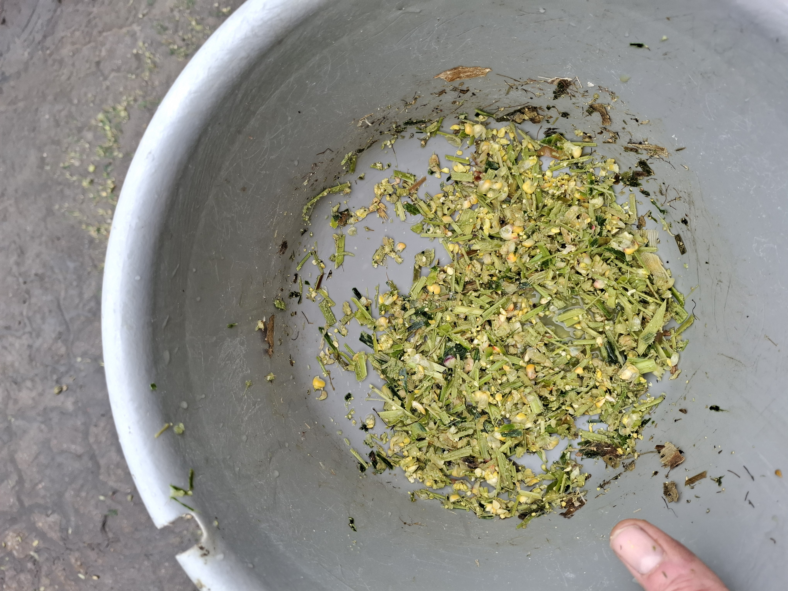
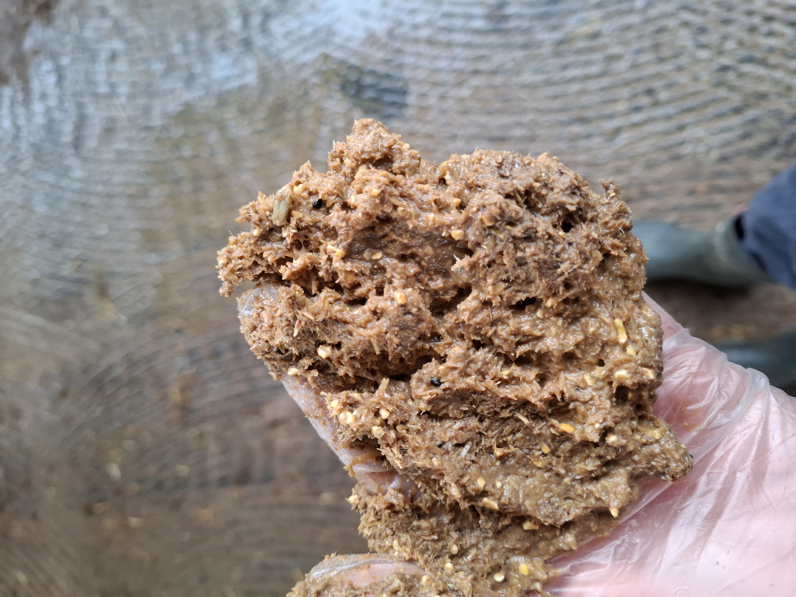
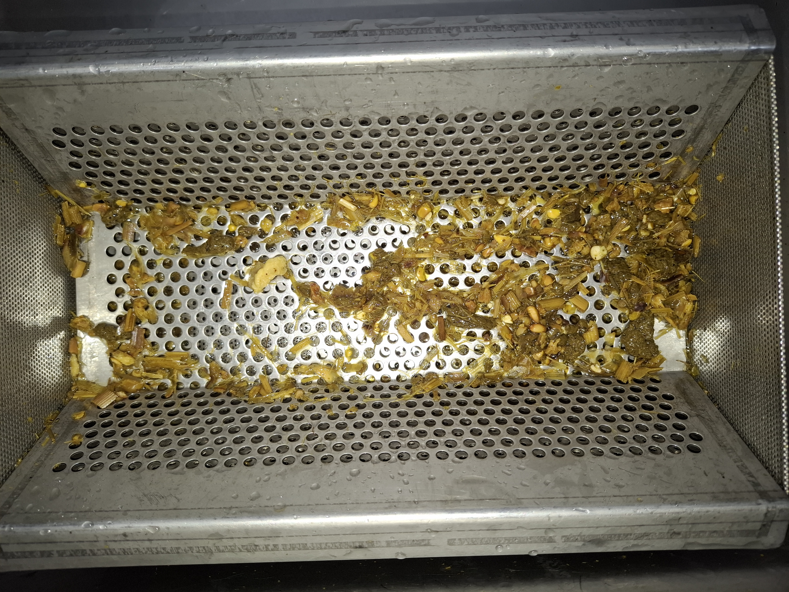
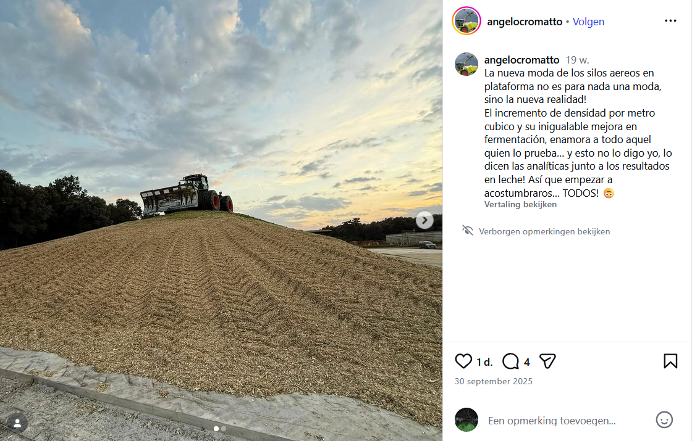

Grundfutter 2025-2026, Hof Karp
2026-02-19
Silages 2025
Mais




(Mais)silage
Verdichtung, Sauerstoff und Qualität

Quelle: https://shorturl.at/xmfVM
Übersetzung
Der neue Trend der Hochsilos auf Plattformen ist keineswegs nur eine Modeerscheinung, sondern die neue Realität! Die Steigerung der Dichte pro Kubikmeter und die unvergleichliche Verbesserung der Fermentation begeistern jeden, der es ausprobiert… und das sage nicht nur ich, das belegen die Analysen zusammen mit den Ergebnissen der Milchleistung! Also gewöhnt euch lieber gleich daran… und zwar ALLE!
Und auch die Präsentation von Mary Beth Hall, min 17:30:

| Folie. | ||
|---|---|---|
| OB | PE | |
| Nominal thickness | 45 | 180 |
| Measured thickness | 44.1 ± 0.81 | 176.2 ± 3.92 |
| Oxygen permeability | 39.4 ± 1.62 | 1,565.0 ± 29 |
| Puncture resistance | 7.5 ± 1.34 | 5.2 ± 0.42 |
| MD Elmendorf tear, g | 446.7 ± 43 | 284.1 ± 43 |
| CD Elmendorf tear, g | 1,104 ± 119 | 2,082.1 ± 50.3 |
| Silage. | |||||||
|---|---|---|---|---|---|---|---|
| CCOR | OB50 | OB100 | OB150 | ST50 | ST100 | ST150 | |
| DM (oven), % | 35.00 | 35.20 | 35.20 | 34.80 | 37.80 | 36.30 | 36.70 |
| DM (corr), % | 35.70 | 36.00 | 35.90 | 35.80 | 38.90 | 38.40 | 38.80 |
| pH | 3.77 | 3.94 | 3.86 | 3.88 | 4.41 | 4.36 | 4.23 |
| NH3-N, % of total N | 5.60 | 5.40 | 5.40 | 5.20 | 6.20 | 6.30 | 6.40 |
| Lactate, % of DM | 7.80 | 6.90 | 6.00 | 6.10 | 4.60 | 5.50 | 5.50 |
| Acetate, % of DM | 0.95 | 0.85 | 0.74 | 1.18 | 0.63 | 0.63 | 0.64 |
| Propionate, % of DM | 0.65 | 0.42 | 0.37 | 0.49 | 0.47 | 0.46 | 0.42 |
| Butyrate, % of DM | 0.07 | 0.18 | 0.19 | 0.08 | 0.43 | 0.36 | 0.22 |
| Ethanol, % of DM | 0.27 | 0.34 | 0.66 | 0.61 | 0.89 | 0.69 | 0.84 |
| Yeasts, cfu/g | 0.10 | 4.72 | 3.92 | 3.94 | 6.42 | 5.11 | 4.75 |
| Molds, cfu/g | 0.10 | 0.10 | 0.10 | 0.10 | 2.61 | 2.44 | 2.18 |
| Futterqualität. | |||||||
|---|---|---|---|---|---|---|---|
| CCOR | OB50 | OB100 | OB150 | ST50 | ST100 | ST150 | |
| Ash, % of DM | 3.20 | 3.40 | 3.50 | 3.40 | 3.60 | 3.60 | 3.70 |
| CP, % of DM | 8.20 | 8.20 | 8.90 | 8.50 | 9.00 | 8.90 | 9.30 |
| Starch, % of DM | 36.50 | 34.50 | 34.00 | 35.40 | 30.40 | 30.10 | 33.10 |
| NDF, % of DM | 42.50 | 44.90 | 43.90 | 44.80 | 46.60 | 45.80 | 46.50 |
| NDF digestibility, % of NDF | 47.10 | 49.30 | 46.80 | 46.50 | 46.30 | 45.80 | 47.80 |
| IVDMD, % | 70.60 | 69.30 | 69.30 | 67.80 | 66.20 | 66.00 | 65.90 |
| TDN-1x, % | 64.30 | 63.50 | 63.50 | 63.10 | 60.20 | 61.50 | 61.30 |
| NE L-3x, Mcal/kg of DM | 1.42 | 1.38 | 1.41 | 1.39 | 1.31 | 1.33 | 1.34 |
| Milk, kg/t of DM | 1294.00 | 1255.10 | 1265.10 | 1254.80 | 1152.10 | 1188.20 | 1193.10 |
| DM loss, % | 5.14 | 5.07 | 4.91 | 7.69 | 9.86 | 10.90 | 7.69 |
Quelle: Lima u. a. (2017)